Solving the Dirichlet problem for the Laplacian outside a open arc.
Our aim is to solve the boundary value problem 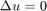 with given Dirichlet data on an open line in 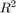. The solution has a singularity near the tips of the arc causing difficulties for numerical resolution. We show a method of resolution using a weighted version of the single layer potential and a preconditioner for the system based on an analysis when the arc is the open segment 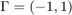. This preconditioner involves a the square root of a weighted version of the Laplace operator.
Contents
1°) Singularity of the solution
We first create the curve, which is the 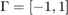 segment. segment is an object of type "simpleCurve", containing the parametric representation of the curve
segment = unitSegment; figure plot(segment) title('The unit segment') xlabel('t');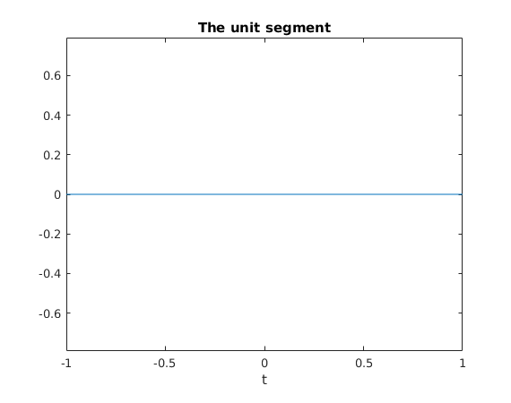
We define a mesh on the curve.
Nmesh = 10; mesh = MeshCurve(segment,Nmesh); figure plot(mesh); title(sprintf('The mesh with %s segments',num2str(Nmesh))); xlabel('t');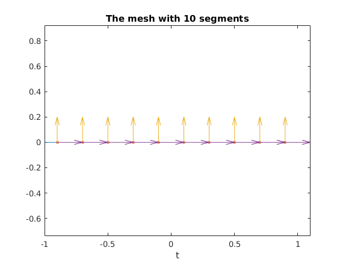
We can define 'P0' Finite elements on the mesh
Vh = FEspace(mesh,'P0'); figure plot(Vh.cell); title('The ''P0'' finite element functions on the reference element'); xlabel('x');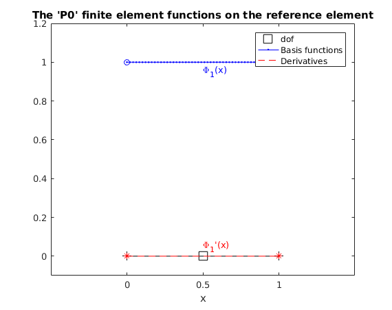
or also 'P1' Finite elements on the mesh
Vh = FEspace(mesh,'P1'); figure plot(Vh.cell); title('The ''P1'' finite element functions on the reference element'); xlabel('x');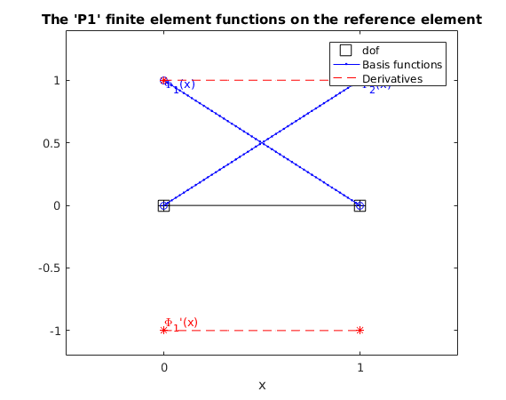
Say we want to solve the Dirichlet scattering problem That is, let an incident field 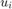 with 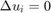 in all 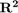. Let us choose an incident wave that is constant.
u_i = R2toRfunc(1);
The scattered field 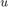 satisfies with 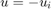 prescribed on both sides of the segment. Then, the scattered field is equal to 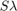 where 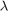 is the jump of normal derivatives of across 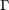 and 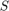 is the single layer potential. On the segment, this translates to 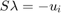. Let us assemble the single layer potential. Here, the variable S is an object that contains a method for the matrix product evaluation on each vector, without storing the actual coefficients of the matrix. The linear system is solved using Krylov method (GMRES). For a function defined on , the secondMember routine returns the linear form l with coefficients
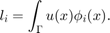
Those coefficients are obtained via Gaussian quadratures.
k = 0; % Frequency. S = singleLayer(k,Vh,[],{'a_factor',5}); % By default, we set the evalutation points of the % Single layer on the gauss points of Vh. The a_factor parameter allows one % to control the proportion of 'close' vs 'far' interactions. Sgalerk = S.galerkine(Vh,'U'); % A bilinear form with a matrix representation l = Vh.secondMember(-u_i); lambda = variationalSol(Sgalerk,l); % Here the gmres takes place. figure plot(lambda); title('The approximated solution of S \lambda = - u_i')
********************************************* SBD package : launching the radial decomposition New iterations, with number of components : 17 New iterations, with number of components : 34 Warning: Condition number too high, restarting with a = 2.282177e-01 Bessel decomposition successfully computed. Number of terms : 26 Done NUFFT for local correction : * **************** gmres returned a solution in 6 iteration Warning: Imaginary part of the data ignored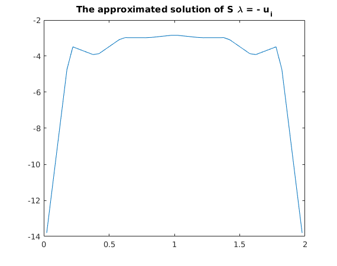
The exact solution of this problem is known.
t = R2toRfunc(@(Z)(Z(:,1))); lambda_theo = -2/log(2)*1/sqrt(1-t^2); lambda_theo_h = Vh.Pi_h(lambda_theo); hold on; plot(lambda_theo_h); legend({'approximated solution','Theoretical solution'});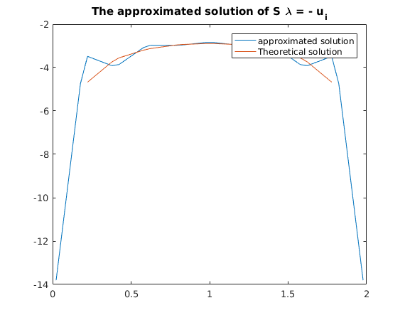
If we refine the mesh, the approximation converges to the actual solution, however quite slowly.
Nremesh = 300; S = S.remesh(Nremesh); Sgalerk = S.galerkine(S.Vh,'U'); l = S.Vh.secondMember(-u_i); lambda = variationalSol(Sgalerk,l,[],1e-8,Nremesh); % Here the gmres takes place. figure plot(lambda); title('The approximated solution of S lambda = - u_i') lambda_theo_h = S.Vh.Pi_h(lambda_theo); hold on; plot(lambda_theo_h); legend({'approximated solution','Theoretical solution'});
********************************************* SBD package : launching the radial decomposition New iterations, with number of components : 91 New iterations, with number of components : 182 Bessel decomposition successfully computed. Number of terms : 108 Done NUFFT for local correction : * ******************************************************************************************************************** gmres returned a solution in 56 iteration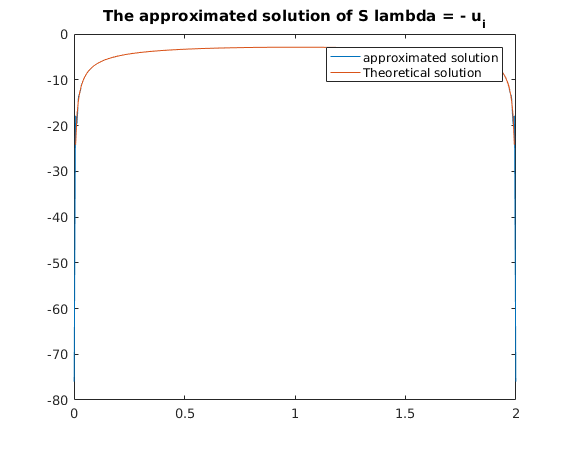